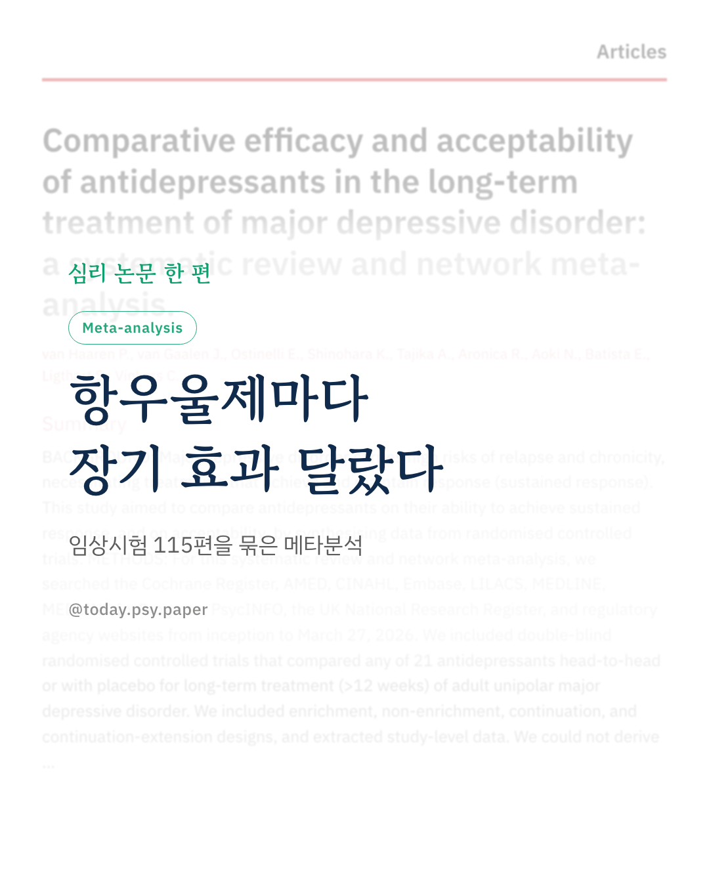
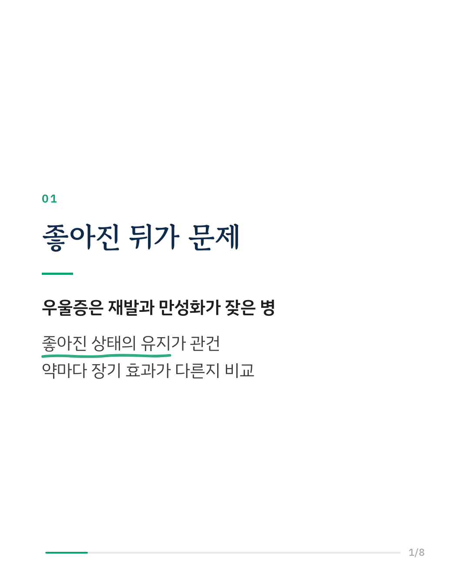
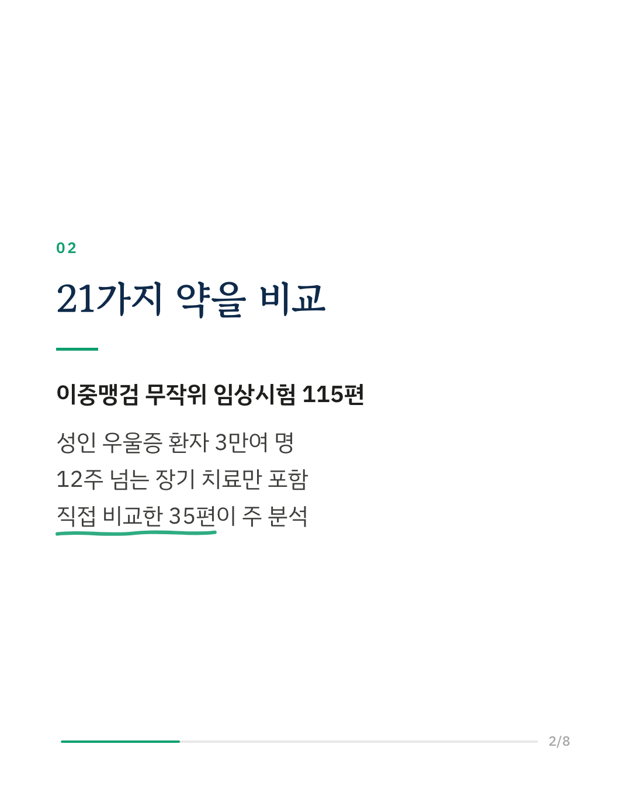
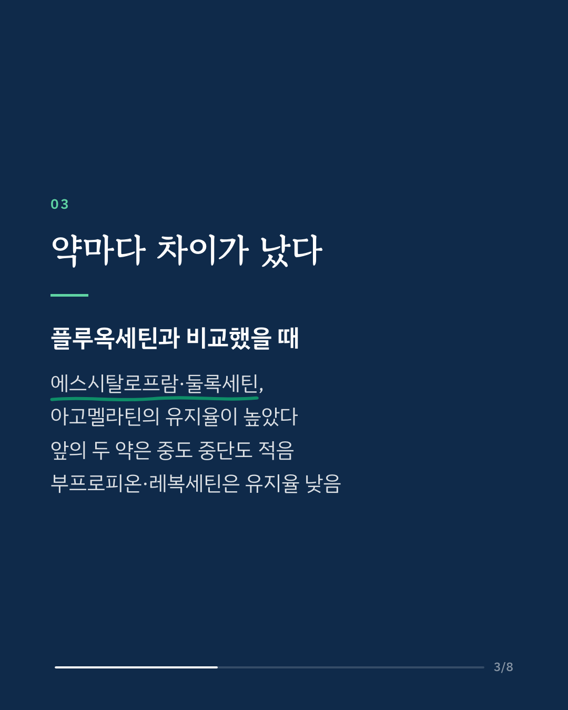
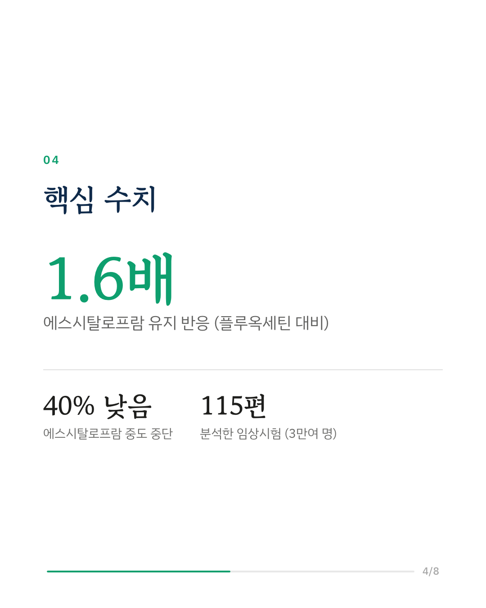
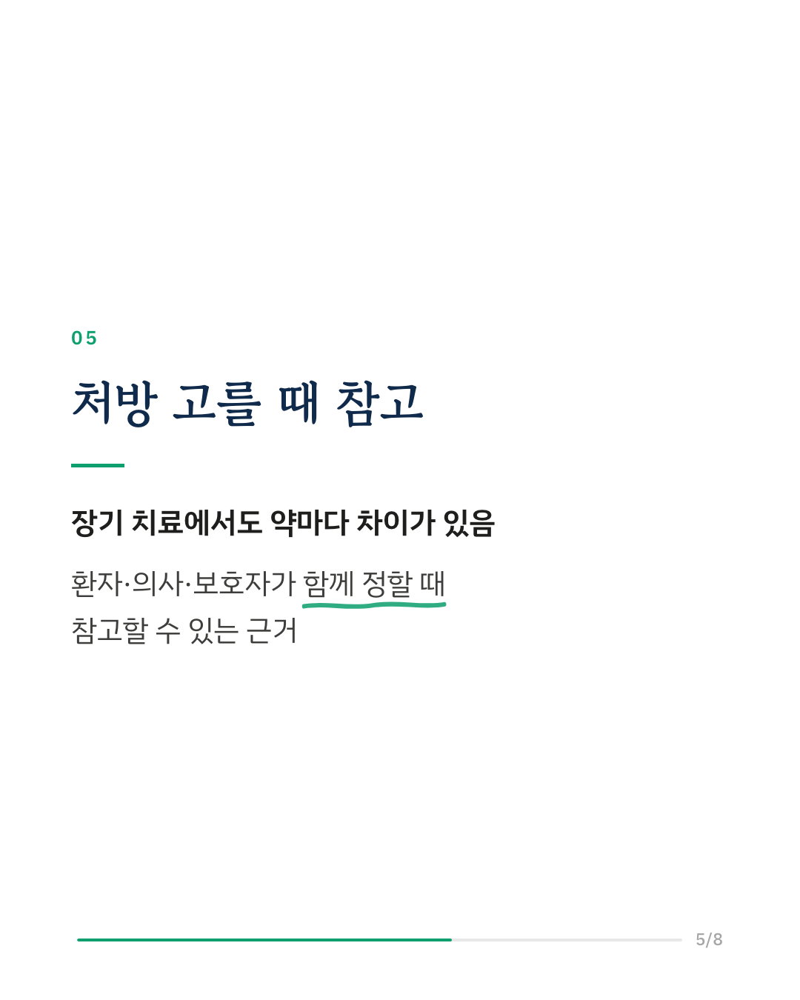
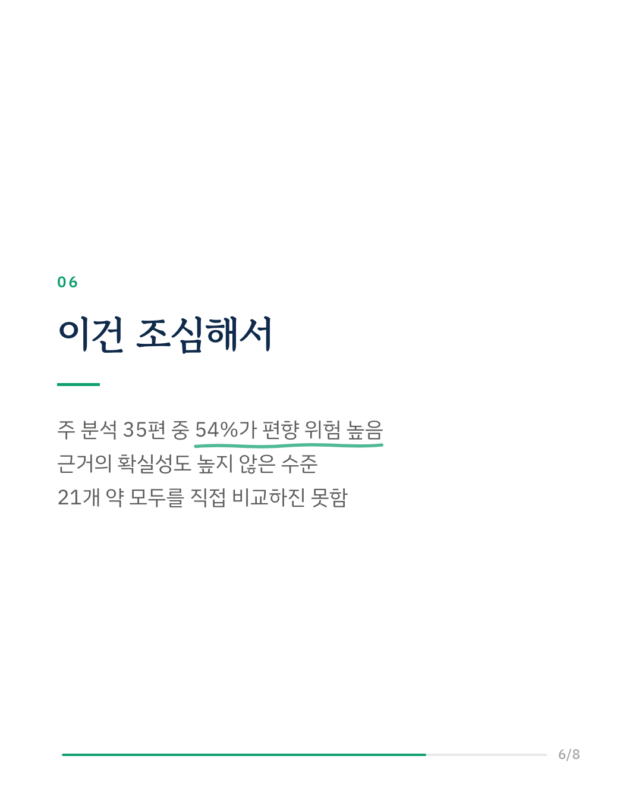
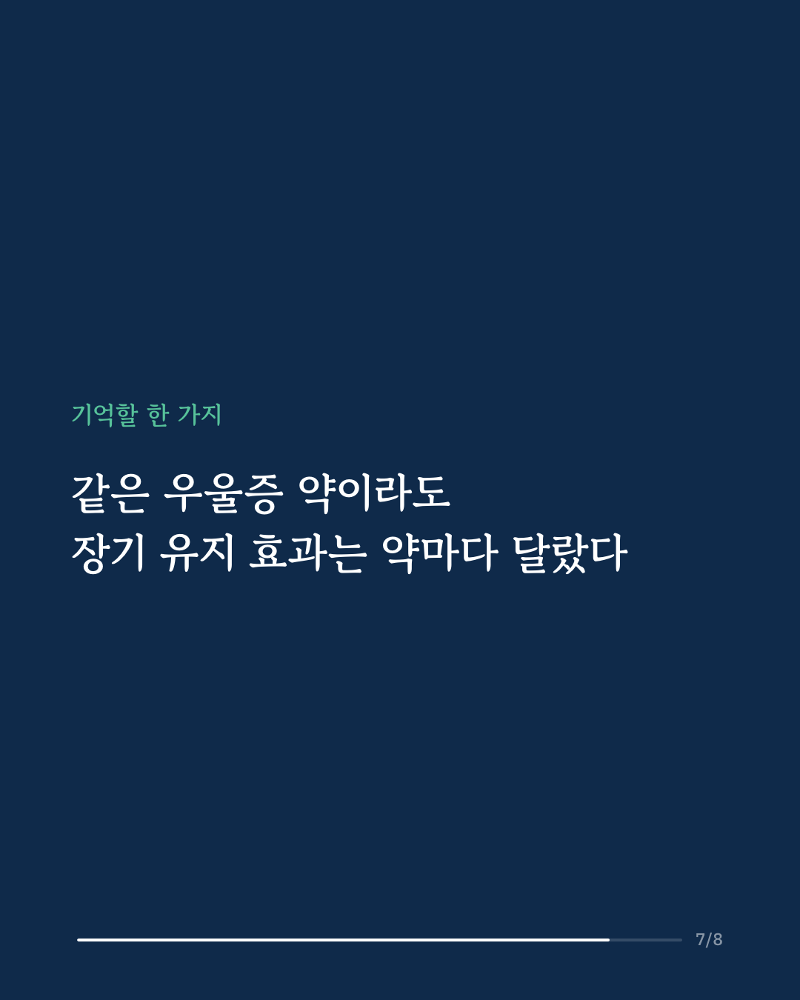
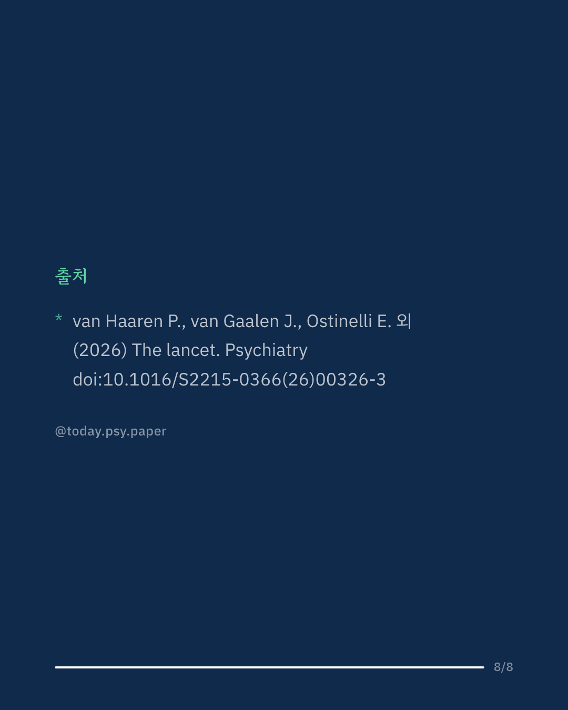

우울증은 나아진 뒤에도 재발이 잦아, 좋아진 상태를 오래 유지하는 것이 치료의 큰 과제입니다. 이 연구는 항우울제 21종의 장기 효과를 비교하기 위해, 12주 넘게 이어진 이중맹검 임상시험 115편(성인 약 3만 명)을 네트워크 메타분석으로 종합했습니다. 약끼리 직접 비교한 35편을 중심으로 분석하자, 플루옥세틴에 비해 에스시탈로프람·둘록세틴·아고멜라틴을 복용한 사람들이 좋아진 상태를 유지하는 비율이 높았습니다. 에스시탈로프람은 유지 가능성이 약 1.6배로, 차이는 작은 편에서 중간 정도입니다. 에스시탈로프람과 둘록세틴은 어떤 이유로든 복용을 중단하는 비율도 낮았고, 부프로피온과 레복세틴은 다른 약들보다 유지 비율이 낮았습니다. 연구진은 이 결과가 환자와 처방의, 보호자가 함께 약을 정할 때 참고가 될 수 있다고 말합니다. 다만 주 분석에 쓰인 연구의 절반 이상(54%)이 편향 위험이 높게 평가되어, 연구진도 결과의 신뢰도에 한계가 있다고 밝혔습니다. 출처: The Lancet Psychiatry (2026), 'Comparative efficacy and acceptability of antidepressants in the long-term treatment of major depressive disorder: a systematic review and network meta-analysis' DOI: 10.1016/S2215-0366(26)00326-3 #임상심리 #정신건강정보 #심리학연구 #논문리뷰 #우울증 #항우울제 #우울증치료 #메타분석
python3 publish.py 43008763